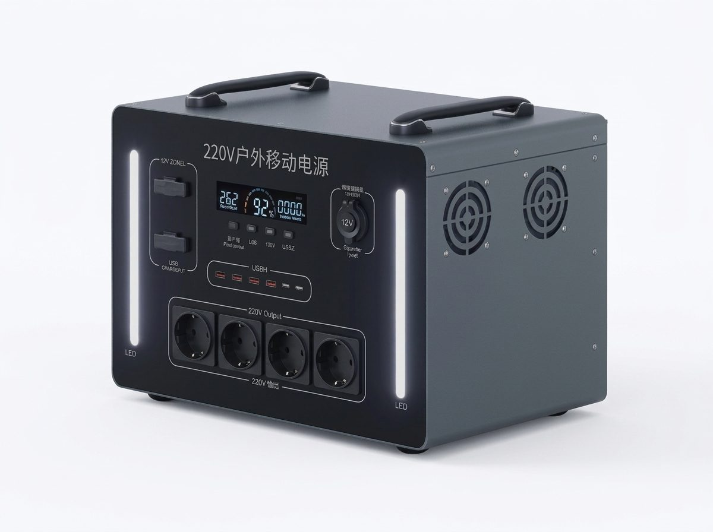
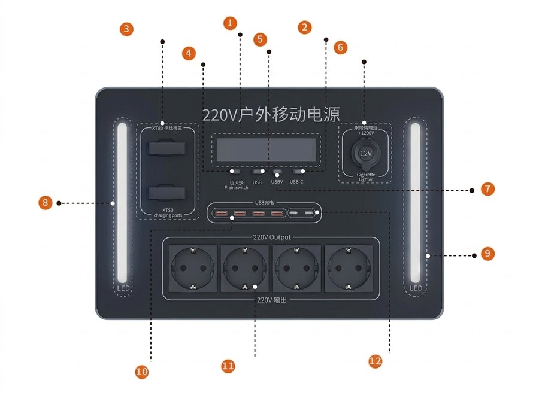

Портативная электростанция 2 000 Вт · 4,2 кВт·ч

Выберите вариант корпуса:
77 925 ₽ с доставкой
Характеристики и параметры зарядки (Тёмный корпус)
| Номинальная мощность | 2 000 Вт (постоянная, переменный ток 220 В) |
|---|---|
| Пиковая мощность (кратковременно) | до 4 000 Вт (2× номинала, до 0,3 с, по паспорту изделия) |
| Ёмкость | 4 200 Вт·ч (4,2 кВт·ч) |
| Тип батареи | литий-железо-фосфатная (LiFePO4) |
| Выход переменного тока | 190–230 В, 50 Гц |
| Розетки 220 В | 4 × 10 А (до 2 000 Вт) |
| Выход постоянного тока | 12 В (гнездо прикуривателя и разъёмы) |
| Разъёмы постоянного тока | Гнездо прикуривателя: 12 В, до 120 Вт; Разъём XT90: до 400 Вт |
| Порты USB | USB-A до 18 Вт (5–12 В); USB-C до 65 Вт |
| КПД инвертора | не менее 85 % |
| Охлаждение | воздушное (вентиляторы) |
| Защиты | от перегрузки по току, перезаряда, перенапряжения, перегрева, глубокого разряда, перегрузки, короткого замыкания |
| Ресурс батареи | 2000+ циклов заряда (после них ёмкость не менее 80 %), по паспорту изделия |
| Дисплей | светодиодный (LED) |
| Температура при зарядке | от 0 до +45 °C |
| Температура при работе (разряд) | от −10 до +45 °C |
| Температура хранения | от −20 до +60 °C |
| Материал корпуса | металл |
| Размеры (Д × Ш × В) | 43 × 28 × 29 см |
| Вес без упаковки | 31 кг |
| Вес в упаковке | 37 кг |
| Размер упаковки | 50 × 35 × 49 см |
| Комплект | станция, инструкция, зарядное устройство |
Время зарядки от сети 220 В: до 80 % — ≈ 4–6,5 ч, до 100 % — ≈ 6–9,5 ч (ориентировочно)
Схема портов и разъёмов

- 1Экран (дисплей)
- 2Кнопка светодиодной подсветки
- 32 порта XT90: зарядка и разряд (постоянный ток)
- 4Выключатель USB-портов
- 5Главный выключатель
- 6Гнездо прикуривателя (выход постоянного тока)
- 7Выключатель розеток 220 В
- 8Светодиодная подсветка
- 9Светодиодная подсветка
- 104 порта USB-A
- 114 розетки 220 В
- 122 порта USB-C

Что и сколько часов будет работать от этой электростанции
Расчёт автономной работы приборов от ёмкости 4 200 Вт·ч с учётом КПД инвертора 85 % и номинальной мощности 2 000 Вт:
| Прибор / нагрузка | Статус запуска | Время автономной работы |
|---|---|---|
| Газовый котёл (настенный, двухконтурный) (150 Вт) | ✅ Тянет | до 1,5 суток * |
| Тёплый пол (водяной, насос) (60 Вт) | ✅ Тянет | до 2,5 суток * |
| Холодильник с морозильной камерой (150 Вт) | ✅ Тянет | до 2,5 суток * |
| Wi-Fi роутер (12 Вт) | ✅ Тянет | до 12,4 суток * |
| Освещение (5 LED-ламп) (50 Вт) | ✅ Тянет | до 3 суток * |
| Телевизор (Smart TV) (100 Вт) | ✅ Тянет | до 1,5 суток * |
| Ноутбук (работа и зарядка) (60 Вт) | ✅ Тянет | до 2,5 суток * |
| Смартфон (полных зарядок) (15 Вт) | ✅ Тянет | ≈ 238 полных зарядок |
| Скважинный / колодезный насос (800 Вт) | ⚠️ Пуск на пике (до 0,3 с) | ≈ 4,5 ч |
| Сплит-система инверторная (900 Вт) | ✅ Тянет | ≈ 7,9 ч |
| Электроинструмент (перфоратор, дрель) (1000 Вт) | ✅ Тянет | ≈ 3,6 ч |
| Болгарка (УШМ 125 мм) (1200 Вт) | ⚠️ Пуск на пике (до 0,3 с) | ≈ 3 ч |
| Микроволновка или кофемашина (1300 Вт) | ✅ Тянет | ≈ 2,7 ч |
| Электрочайник (2000 Вт) | ✅ Тянет | ≈ 1,8 ч |
| Электрообогреватель (конвектор) (2000 Вт) | ✅ Тянет | ≈ 1,8 ч |
| Электроплита (2 конфорки) (3000 Вт) | ❌ Превышает номинал | Нужна станция от 3 000 Вт (у этой 2 000 Вт) |
* Время расчётное. При включённом инверторе станция потребляет до 50 Вт (по паспорту изделия): у приборов до 100 Вт фактическое время работы может быть меньше. Мелкие гаджеты рекомендуется заряжать через штатные USB-порты.